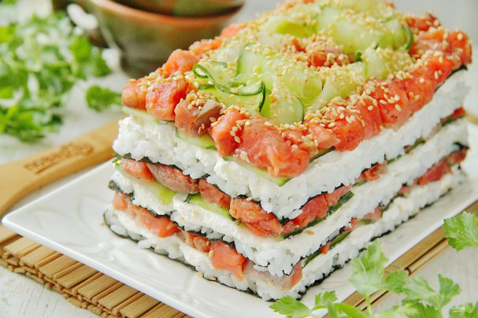

Салат Суши

Ингредиенты:
Рис — 0,5 Стакана
Соль — 1/4 Чайных ложки
Сахар — 1/4 Ст. ложки
Уксус рисовый — 25 Миллилитров
Лист нори — 3 Штуки
Лосось — 350 Грамм (слабосоленый)
Огурец — 1 Штука
Сыр Филадельфия — 200 Грамм
Кунжут — По вкусу
Приготовление:
1. Сварите рис для суши или любой другой клейкий согласно инструкции на упаковке (200 гр риса на 500 мл воды).
Довести до кипения, убавить огонь и на медленном проварить еще 10 минут, не мешая. Потом с закрытой крышкой дала настояться еще 10 минут. Когда рис будет готов, соедините уксус, сахар и соль, добавьте заправку к рису. Аккуратно перемешайте и дайте остыть.
2. Красную рыбу нарежьте небольшими кусочками.
3. Огурец нарежьте тонкими слайсами.
4. Листы нори вырежьте кухонными ножницами по размеру блюда, на котором будете подавать салат. Это может быть круглое или прямоугольное, если будете подавать на квадратной тарелке, то листы можно оставить целыми, но тогда количество ингредиентов возможно уйдет чуть больше. Положите первым лист нори шероховатой стороной вверх.
5. Мокрыми руками аккуратно распределите сверху рис небольшим слоем.
6. Смажьте рис сыром. Сверху в один слой положите огуречные слайсы. На огурцы положите кусочки рыбы. Посыпьте рыбу слегка кунжутом.
7. Повторите слои еще раз. Должно получиться 3 листа нори и 3 слоя начинки. Верх салата украсьте на свой вкус.
8. Поставьте салат в холодильник хотя бы на 30 минут для охлаждения. Салат "Суши" готов. Приятного аппетита!
Салат необходимо нарезать очень острым и широким ножом, чтобы он держал свою форму!